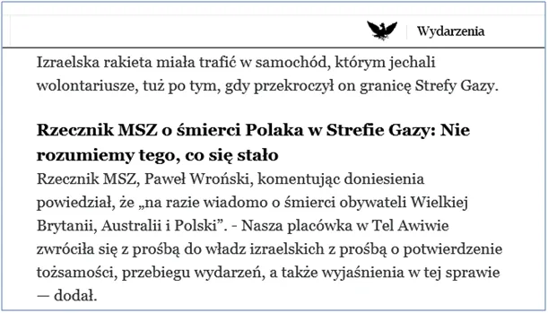

Polski MSZ “nie rozumie co się stało”, gdy izraelska rakieta trafiła w samochód z pomocą humanitarną w Gazie.
Tak, to bardzo dziwne, od pół roku, co dzień mamy podobne sytuacje, ale musiał zginąć Polak rozdający jedzenie w Gazie, aby polska agencja prasowa napisała coś o dziejącej się tam zbrodni. Trudno to dyplomacie zrozumieć mimo, że napisano to po polsku.

Pacyfikacja Gazy przez armię Izraela nie ma precedensu we współczesnym świecie. Podobnej zbrodni dopuścili się Niemcy w 1944 mordując całą cywilną ludność Warszawy i metodycznie burząc całe miasto. Ataki w Gazie na placówki humanitarne nie są niczym nowym, ale wczoraj w ataku na World Central Kitchen (WCK), budynek organizacji rozdającej żywność zginęło 7 jej pracowników, w tym z Wielkiej Brytanii, Polski i Australii.
"Premier Australii zażądał we wtorek od Izraela odpowiedzialności za zabicie australijskiego pracownika pomocy w Strefie Gazy. "Australia oczekuje pełnej odpowiedzialności za śmierć pracowników organizacji humanitarnych, co jest całkowicie niedopuszczalne” – powiedział dziennikarzom Anthony Albanese."
Polskie media podały też tę wiadomość, czekamy na stanowisko premiera i parlamentu. Polska jako jedno z kilku Państw na świecie milczy od pół roku udając, że w Gazie nic się nie dzieje. Tymczasem zniszczono już ponad 60 % miasta, zabito ponad 30 tyś. cywilów, głównie kobiet i dzieci, ponad 100 tyś. jest rannych a miliony nie mają, co jeść i gdzie mieszkać.
W takiej sytuacji Izrael blokuje dostawy pomocy humanitarnej z Egiptu. Żywność rozdawaną przez WCK została dostarczona morzem. Kraje arabskie robią zrzuty z samolotów, Palestyńczycy są gazowani w kanałach pod miastem. Sytuacja przypomina tragedię z Warszawy z 1944. Ciśnienie polityczne jest tak duże, że w ubiegłym tygodniu USA po raz pierwszy nie zawetowało w ONZ rezolucji wzywającej Izrael do zawieszenia broni. Wcześniej USA korzystając z prawa veta takie rezolucje blokowały. Takich mamy sojuszników! Po zmianie władzy w ostatnich wyborach polityka międzynarodowa rządu ślepo trzyma kurs poprzedników w stronę przepaści.
www.aa.com.tr
Paweł Klimczewski